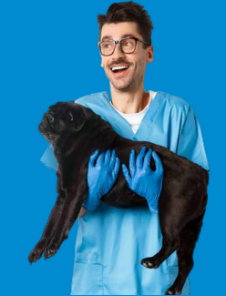
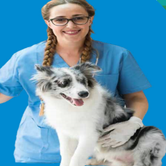
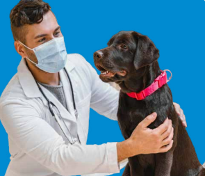
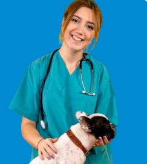

Con más de 10 años de experiencia, la Dra. García es una
apasionada de la medicina veterinaria. Es especialista en
cirugía y cuidados intensivos, y se destaca por su dedicación
y empatía con los animales y sus dueños.
Dr. Juan Pérez (Veterinario General)
El Dr. Pérez es un veterinario general con un enfoque en
medicina preventiva y bienestar animal. Siempre dispuesto a
ayudar, es conocido por su paciencia y su habilidad para
tranquilizar a las mascotas más nerviosas.

Lucía Martínez (Técnica Veterinaria)

Lucía es una técnica veterinaria con un don especial para
el cuidado de animales exóticos. Su amor por los animales
se refleja en su trabajo diario, donde se esfuerza por
brindarles el mejor cuidado posible.
Pedro Sánchez (Auxiliar Veterinario)
Pedro es un auxiliar veterinario entusiasta y comprometido
con su trabajo. Siempre dispuesto a aprender y a colaborar
en equipo, es conocido por su actitud positiva y su habilidad
para calmar a las mascotas más inquietas.

Laura Rodríguez (Recepcionista)

Laura es la recepcionista de la clínica, encargada de recibir
a los clientes y coordinar las citas. Amable y atenta, se
esfuerza por hacer que la experiencia de los dueños y sus
mascotas sea lo más agradable posible desde el primer
contacto.